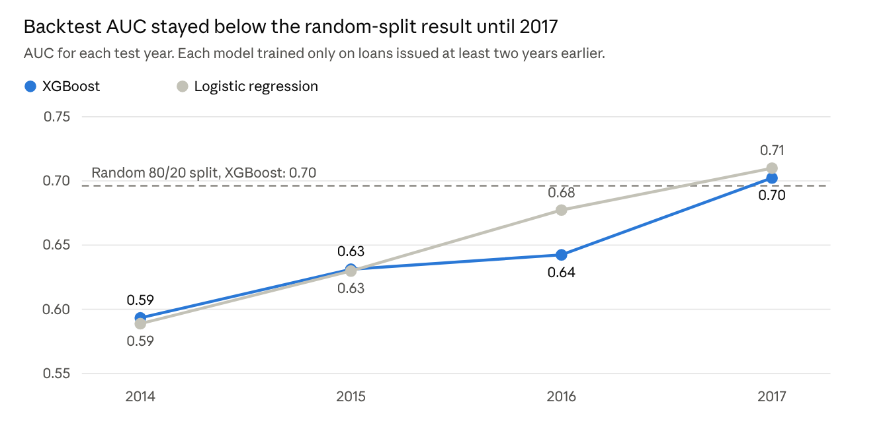
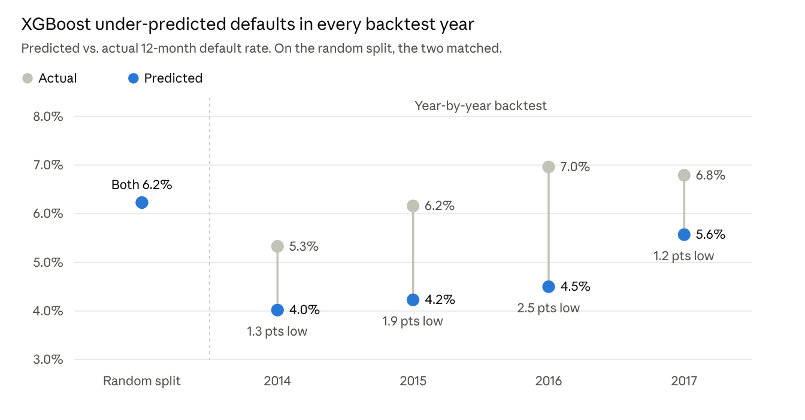

Testing a Model
Against a Future
It Hasn't Seen
A random split tells you how well a model describes the past. A backtest tells you how it does on data that arrived after it was built. Here's a year-by-year backtest on real LendingClub data, and what it shows that a random split hides.
A Random Split Answers a Different Question
Early in my career, testing a model meant holding out the last six months of data. We built the model on everything before that, then scored the most recent six months and compared the predictions to what actually happened. Nobody called it anything special. It was just how you checked your work.
Most of the tutorials I see today do it differently, including some of my own. They split the data at random: eighty percent for training, twenty for testing, no matter when the loans were made. The numbers that come out look clean. But they answer a different question.
A random split tells you how well a model describes the past. That old six-month holdout told you something closer to what you need: how the model does on data that arrived after it was built. In this tutorial I take that habit one step further. Instead of holding out one period, I hold out one year at a time and walk the model forward through four of them.
Why a random split flatters the model
A random split mixes every year into both sets, so the model can learn from 2016 loans and then be tested on 2012 ones. The test set also looks just like the training set. Same years, same borrowers, same lending standards, same economy. A model that scores well under those conditions has shown it can describe the period it was trained on. It hasn't shown it can predict a period it hasn't seen.
In practice, that second thing is the only one that matters. Nobody deploys a credit model to score loans from three years ago.
Following Predictions into a Future You Already Know
The obvious fix is to wait. Deploy the model, follow the loans, and see how they turn out. That works, but it takes years. By the time you have an answer, the model has already been making decisions.
Backtesting gets you the same evidence without the wait. You pretend it's the end of 2013 and train only on what you would have known at that point. Then you predict the loans issued in 2014. Because 2014 is history, you already know which of those loans defaulted, so you can score the predictions right away.
Then you step forward. Pretend it's the end of 2014 and predict 2015. Then the end of 2015, and predict 2016. Each step is a small rehearsal of what would have happened if you had put the model into production that year.
Train only on what you would have known at the time. Predict the next year. Score it against what really happened. Step forward and repeat.
Loans Take Time to Go Bad
A LendingClub loan runs 36 or 60 months, and a loan issued last month looks perfectly healthy because it hasn't had time to default. If you count those loans as good, the model learns that new loans are safe, and the backtest rewards it for that mistake.
The fix I use is a fixed performance window. A loan counts as a default if it defaulted within 12 months of issue. Every loan in every test year then gets the same amount of time to show what it is.
If I'm standing at the end of 2013, I only know the 12-month outcome for loans issued through 2012. Loans from 2013 are still in their first year. So each training set has to stop a year before the test year begins: to predict year Y, train only on loans issued through Y minus 2.
It feels like throwing data away. It's actually the point. The model only gets what I would really have had in hand.
Imports and Settings
The script runs from the command line and takes the path to the LendingClub sample as its one argument. The snapshot date matters: the data was pulled in March 2019, so loans issued through December 2017 have at least 15 months of history, enough for a 12-month default to show up.
import sys
import numpy as np
import pandas as pd
from sklearn.compose import ColumnTransformer
from sklearn.impute import SimpleImputer
from sklearn.linear_model import LogisticRegression
from sklearn.metrics import roc_auc_score
from sklearn.model_selection import train_test_split
from sklearn.pipeline import Pipeline
from sklearn.preprocessing import OneHotEncoder, StandardScaler
from xgboost import XGBClassifier
SEED = 42
DATA_PATH = sys.argv[1] if len(sys.argv) > 1 else "lendingclub_sample_25000.csv"
LAST_ELIGIBLE_ISSUE = "2017-12-01" # snapshot is March 2019, so 15+ months of history
TEST_YEARS = [2014, 2015, 2016, 2017]python backtest_lendingclub.py lendingclub_sample_25000.csv
Install if needed: pip install pandas numpy scikit-learn xgboost
Build the 12-Month Default Flag
A loan counts as a default if it ended up charged off or seriously late and the borrower stopped paying within the first 12 months. LendingClub doesn't record a default date, so I use the last payment date as a stand-in. Loans issued after December 2017 are dropped because they haven't had a full window yet.
df = pd.read_csv(DATA_PATH, low_memory=False).copy()
issue = pd.to_datetime(df["issue_d"], format="%b-%Y")
last_pay = pd.to_datetime(df["last_pymnt_d"], format="%b-%Y")
months_paying = ((last_pay.dt.year - issue.dt.year) * 12
+ (last_pay.dt.month - issue.dt.month)).fillna(0) # no payment = 0
bad_status = df["loan_status"].isin([
"Charged Off",
"Default",
"Late (31-120 days)",
"Does not meet the credit policy. Status:Charged Off",
])
df["default_12m"] = (bad_status & (months_paying <= 12)).astype(int)
df["issue_year"] = issue.dt.year
df = df[issue <= LAST_ELIGIBLE_ISSUE].copy()Application-Time Features and Two Models
Two models go through the same backtest. One is XGBoost, the boosted model from my XGBoost vs. Random Forest tutorial and the kind that tends to look best on a random split. The other is a plain logistic regression. Both use the same 25 features, all known at the time of application, such as income, debt-to-income ratio, FICO score, and loan grade.
df["term_months"] = df["term"].str.extract(r"(\d+)").astype(float)
df["emp_years"] = (df["emp_length"].str.replace("< 1", "0", regex=False)
.str.extract(r"(\d+)").astype(float))
earliest = pd.to_datetime(df["earliest_cr_line"], format="%b-%Y", errors="coerce")
df["credit_history_months"] = ((issue.loc[df.index].dt.year - earliest.dt.year) * 12
+ (issue.loc[df.index].dt.month - earliest.dt.month))
grade_order = {g: i for i, g in enumerate("ABCDEFG")}
df["grade_num"] = df["grade"].map(grade_order)
df["sub_grade_num"] = df["grade_num"] * 5 + df["sub_grade"].str[1].astype(float)
df["fico"] = (df["fico_range_low"] + df["fico_range_high"]) / 2
df["loan_to_income"] = df["loan_amnt"] / df["annual_inc"].replace(0, np.nan)
NUMERIC = [
"loan_amnt", "term_months", "int_rate", "installment", "grade_num",
"sub_grade_num", "emp_years", "annual_inc", "loan_to_income", "dti",
"delinq_2yrs", "fico", "inq_last_6mths", "mths_since_last_delinq",
"open_acc", "pub_rec", "revol_bal", "revol_util", "total_acc",
"mort_acc", "pub_rec_bankruptcies", "credit_history_months",
]
CATEGORICAL = ["home_ownership", "verification_status", "purpose"]
FEATURES = NUMERIC + CATEGORICAL
TARGET = "default_12m"
def make_logit():
pre = ColumnTransformer([
("num", Pipeline([("impute", SimpleImputer(strategy="median")),
("scale", StandardScaler())]), NUMERIC),
("cat", OneHotEncoder(handle_unknown="ignore", min_frequency=20), CATEGORICAL),
])
return Pipeline([("pre", pre), ("model", LogisticRegression(max_iter=2000))])
def make_xgb():
pre = ColumnTransformer([
("num", "passthrough", NUMERIC),
("cat", OneHotEncoder(handle_unknown="ignore", min_frequency=20), CATEGORICAL),
])
model = XGBClassifier(
n_estimators=300, max_depth=3, learning_rate=0.05, subsample=0.8,
colsample_bytree=0.8, min_child_weight=5, eval_metric="logloss",
random_state=SEED, n_jobs=4,
)
return Pipeline([("pre", pre), ("model", model)])
MODELS = {"XGBoost": make_xgb, "Logistic regression": make_logit}The baseline matters. If the boosted model can't beat logistic regression when both face the future, the extra complexity isn't buying anything.
The Usual Way: A Random 80/20 Split
First, the default rate by issue year, and then the validation most tutorials stop at. I track two things for every test: AUC, which tells me whether the model ranks risky borrowers above safer ones, and the predicted default rate against the actual rate, which tells me whether the model's probabilities still mean what they say.
print("Eligible loans:", len(df), "| 12-month defaults:", int(df[TARGET].sum()))
print("\nDefault rate by issue year")
print(df.groupby("issue_year")[TARGET].agg(loans="size", defaults="sum", rate="mean")
.round(3).to_string())
train, test = train_test_split(df, test_size=0.2, stratify=df[TARGET], random_state=SEED)
random_rows = []
for name, make in MODELS.items():
m = make().fit(train[FEATURES], train[TARGET])
p = m.predict_proba(test[FEATURES])[:, 1]
random_rows.append({"model": name, "auc": roc_auc_score(test[TARGET], p),
"predicted_rate": p.mean(), "actual_rate": test[TARGET].mean()})
random_split = pd.DataFrame(random_rows)
print("\nRandom 80/20 split")
print(random_split.round(3).to_string(index=False))Of the 25,000 loans in the sample, 19,512 have a full 12-month window, issued from 2007 through 2017. Of those, 1,213 stopped paying within their first year, about 6 percent.
On the random split, XGBoost scores an AUC of 0.70 and logistic regression 0.69. The models predict a 6.2 percent default rate on the test set, and the actual rate is 6.2 percent. On paper, that's a tidy result.
The Backtest: Train Through Y Minus 2, Predict Year Y
rows = []
for year in TEST_YEARS:
tr = df[df["issue_year"] <= year - 2]
te = df[df["issue_year"] == year]
for name, make in MODELS.items():
m = make().fit(tr[FEATURES], tr[TARGET])
p = m.predict_proba(te[FEATURES])[:, 1]
rows.append({
"test_year": year, "model": name,
"train_loans": len(tr), "train_defaults": int(tr[TARGET].sum()),
"test_loans": len(te), "test_defaults": int(te[TARGET].sum()),
"auc": roc_auc_score(te[TARGET], p),
"predicted_rate": p.mean(), "actual_rate": te[TARGET].mean(),
})
backtest = pd.DataFrame(rows)
print("\nYear-by-year backtest")
print(backtest.round(3).to_string(index=False))
Figure: Backtest AUC stayed below the random-split result until 2017. Each model trained only on loans issued at least two years earlier. LendingClub sample of 25,000 loans, 19,512 issued 2007 to 2017 with a full 12-month window.
The backtest tells a different story. Predicting 2014 loans, XGBoost scored 0.59. It reached 0.63 in 2015 and 0.64 in 2016 before matching the random split in 2017.
Logistic regression kept pace the whole way. It matched XGBoost in 2014 and 2015 and beat it in 2016 and 2017. Once both models had to face the future, the extra complexity bought nothing.
XGBoost results shift a little between library versions. The output above came from XGBoost 3.2 and differs from the charts by about 0.01 in places. The pattern, and every conclusion here, is the same.
Is It Time, or Just Smaller Training Sets?
Part of that gap isn't about time at all. The early backtests had very little to learn from. The 2014 model trained on just 1,068 loans and 57 defaults. So I reran the random split with training sets cut to the same sizes, five times each, and averaged the AUC.
size_rows = []
for year in TEST_YEARS:
n = int((df["issue_year"] <= year - 2).sum())
aucs = []
for s in range(5):
tr, te = train_test_split(df, test_size=0.2, stratify=df[TARGET], random_state=s)
tr = tr.sample(n, random_state=s)
m = make_xgb().fit(tr[FEATURES], tr[TARGET])
aucs.append(roc_auc_score(te[TARGET], m.predict_proba(te[FEATURES])[:, 1]))
size_rows.append({"test_year": year, "train_loans": n,
"random_split_auc_same_size": np.mean(aucs)})
size_check = pd.DataFrame(size_rows).merge(
backtest[backtest["model"] == "XGBoost"][["test_year", "auc"]]
.rename(columns={"auc": "backtest_auc"}), on="test_year")
print("\nXGBoost: random split with the same training size vs. backtest")
print(size_check.round(3).to_string(index=False))
random_split.to_csv("random_split_results.csv", index=False)
backtest.to_csv("backtest_results.csv", index=False)
print("\nSaved random_split_results.csv and backtest_results.csv")Even with the same training sizes, the backtest came in 3 to 4.5 points of AUC lower for 2014 through 2016. That remaining gap is the cost of predicting forward. By 2017, with almost 10,000 training loans, it was gone.
The Bigger Problem Showed Up in the Probabilities
A model can keep ranking well while its probabilities drift, and drifting probabilities are what throw off pricing and loss forecasts. On the random split, predicted and actual default rates matched. In the backtest, XGBoost under-predicted defaults in every year. In 2016 it expected 4.5 percent and got 7.0 percent, about a third fewer defaults than actually happened.

Figure: XGBoost under-predicted defaults in every backtest year. On the random split, predicted and actual matched. LendingClub sample of 25,000 loans, 12-month default rate.
The reason is in the data. Twelve-month default rates rose from 4.2 percent for loans issued in 2013 to about 7 percent for 2016 and 2017. Every model learned from calmer years than the one it had to predict. A random split hides that completely, because it mixes calm years and rough ones into both training and test.
The AUC matched the random split, yet the model predicted 5.6 percent against an actual 6.8 percent. It ranked borrowers just fine and still got the level wrong. If I had priced loans off those probabilities, I would have underpriced the risk.
One caveat on these numbers. LendingClub doesn't record a default date, so I used the last payment date as a stand-in. The sample also has few loans before 2013, which is why the backtest starts with 2014.
What a Backtest Can't Tell You
A backtest tells you how your approach held up across the years you have. It doesn't promise that next year will behave like any of them. Conditions can change in ways your history never showed you.
That's why the work doesn't stop once a model is deployed. You keep comparing its predictions to what actually happens. For the first step, putting a model into production, see Your Model Works. Can It Ship?
Before you trust a model's validation score, ask which years it was tested on. If the answer is the same years it was trained on, you don't know yet how it will do.
Browse all tutorials in Resources.
Back to Resources →